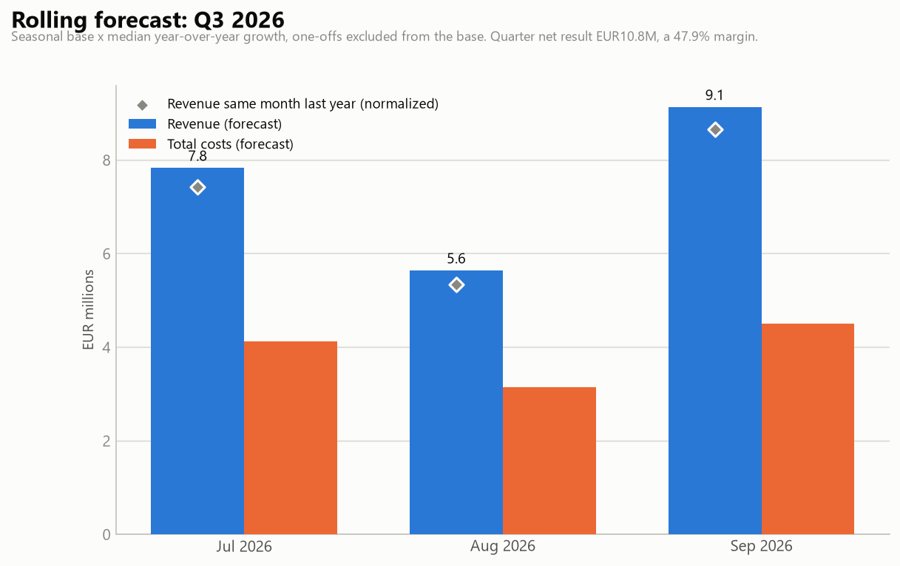

Generated by agents/forecast_agent.py from output/variance_table.csv (the Variance & Root-Cause Agent's output: cleaned actuals/budgets plus materiality flags and evidence). This agent never reads data/ground_truth.md. Last closed month: June 2026.
Forecast = seasonal base × median year-over-year growth, per BU and line item:
Normalization rules. A forecast is only as good as the history it extrapolates:
34 month-values normalized, 0 episode month-values deliberately kept.
one-off material variance, non-recurring by nature, must not be extrapolated
part of episode 2025-04..2025-06, concluded before the forecast cutoff. Its effect is over and must not be extrapolated
Evidence: N11, N13
part of episode 2025-04..2025-06, concluded before the forecast cutoff. Its effect is over and must not be extrapolated
Evidence: N11, N13
part of episode 2025-04..2025-06, concluded before the forecast cutoff. Its effect is over and must not be extrapolated
Evidence: N11, N13
one-off material variance, non-recurring by nature, must not be extrapolated
one-off material variance, non-recurring by nature, must not be extrapolated
suspected data entry error (>4x/<0.25x budget), still uncorrected in the cleaned file
one-off material variance, non-recurring by nature, must not be extrapolated
one-off material variance, non-recurring by nature, must not be extrapolated
one-off material variance, non-recurring by nature, must not be extrapolated
one-off material variance, non-recurring by nature, must not be extrapolated
one-off material variance, non-recurring by nature, must not be extrapolated
part of episode 2025-04..2026-02, concluded before the forecast cutoff. Its effect is over and must not be extrapolated
Evidence: N12, N16
part of episode 2025-04..2026-02, concluded before the forecast cutoff. Its effect is over and must not be extrapolated
Evidence: N12, N16
part of episode 2025-04..2026-02, concluded before the forecast cutoff. Its effect is over and must not be extrapolated
Evidence: N12, N16
part of episode 2025-04..2026-02, concluded before the forecast cutoff. Its effect is over and must not be extrapolated
Evidence: N12, N16
part of episode 2025-04..2026-02, concluded before the forecast cutoff. Its effect is over and must not be extrapolated
Evidence: N12, N16
part of episode 2025-04..2026-02, concluded before the forecast cutoff. Its effect is over and must not be extrapolated
Evidence: N12, N16
part of episode 2025-04..2026-02, concluded before the forecast cutoff. Its effect is over and must not be extrapolated
Evidence: N12, N16
part of episode 2025-04..2026-02, concluded before the forecast cutoff. Its effect is over and must not be extrapolated
Evidence: N12, N16
part of episode 2025-04..2026-02, concluded before the forecast cutoff. Its effect is over and must not be extrapolated
Evidence: N12, N16
part of episode 2025-04..2026-02, concluded before the forecast cutoff. Its effect is over and must not be extrapolated
Evidence: N12, N16
part of episode 2025-04..2026-02, concluded before the forecast cutoff. Its effect is over and must not be extrapolated
Evidence: N12, N16
one-off material variance, non-recurring by nature, must not be extrapolated
one-off material variance, non-recurring by nature, must not be extrapolated
part of episode 2024-12..2025-01, concluded before the forecast cutoff. Its effect is over and must not be extrapolated
part of episode 2024-12..2025-01, concluded before the forecast cutoff. Its effect is over and must not be extrapolated
one-off material variance, non-recurring by nature, must not be extrapolated
one-off material variance, non-recurring by nature, must not be extrapolated
one-off material variance, non-recurring by nature, must not be extrapolated
one-off material variance, non-recurring by nature, must not be extrapolated
one-off material variance, non-recurring by nature, must not be extrapolated
Evidence: N08
one-off material variance, non-recurring by nature, must not be extrapolated
Evidence: N06
one-off material variance, non-recurring by nature, must not be extrapolated

Prior year (PY) is the normalized actual of the same month last year (the forecast base). Growth is the median YoY factor applied.
| Business Unit | Line item | Growth | Jul-26 | Aug-26 | Sep-26 | 3-mo total | PY 3-mo | vs PY |
|---|---|---|---|---|---|---|---|---|
| Brand Events | COGS | 1.05x | EUR1,989,496 | EUR1,282,924 | EUR2,146,572 | EUR5,418,993 | EUR5,176,626 | +4.7% |
| Brand Events | Opex - Facilities | 1.00x | EUR8,333 | EUR8,903 | EUR8,047 | EUR25,283 | EUR25,291 | -0.0% |
| Brand Events | Opex - IT | 0.89x | EUR2,460 | EUR3,212 | EUR2,682 | EUR8,354 | EUR9,336 | -10.5% |
| Brand Events | Opex - Marketing | 0.99x | EUR1,821 | EUR1,893 | EUR1,796 | EUR5,510 | EUR5,553 | -0.8% |
| Brand Events | Opex - Travel | 1.02x | EUR8,841 | EUR9,260 | EUR10,319 | EUR28,421 | EUR27,855 | +2.0% |
| Brand Events | Payroll | 1.03x | EUR281,389 | EUR279,935 | EUR274,229 | EUR835,553 | EUR814,591 | +2.6% |
| Brand Events | Revenue | 1.06x | EUR3,562,275 | EUR2,512,434 | EUR4,119,513 | EUR10,194,222 | EUR9,606,360 | +6.1% |
| Corporate Events | COGS | 1.04x | EUR536,089 | EUR421,627 | EUR648,944 | EUR1,606,659 | EUR1,542,181 | +4.2% |
| Corporate Events | Opex - Facilities | 1.02x | EUR4,168 | EUR4,348 | EUR4,198 | EUR12,714 | EUR12,504 | +1.7% |
| Corporate Events | Opex - IT | 1.00x | EUR2,641 | EUR2,256 | EUR2,635 | EUR7,531 | EUR7,522 | +0.1% |
| Corporate Events | Opex - Marketing | 1.02x | EUR40,869 | EUR37,660 | EUR42,153 | EUR120,682 | EUR118,599 | +1.8% |
| Corporate Events | Opex - Travel | 1.01x | EUR6,135 | EUR5,014 | EUR6,450 | EUR17,600 | EUR17,438 | +0.9% |
| Corporate Events | Payroll | 1.02x | EUR112,806 | EUR105,970 | EUR109,538 | EUR328,314 | EUR321,642 | +2.1% |
| Corporate Events | Revenue | 1.05x | EUR1,526,356 | EUR1,141,635 | EUR1,809,461 | EUR4,477,452 | EUR4,259,601 | +5.1% |
| Digital/Influence | COGS | 1.01x | EUR552,934 | EUR443,489 | EUR647,944 | EUR1,644,368 | EUR1,624,371 | +1.2% |
| Digital/Influence | Opex - Facilities | 1.00x | EUR6,196 | EUR5,985 | EUR6,127 | EUR18,307 | EUR18,289 | +0.1% |
| Digital/Influence | Opex - IT | 0.97x | EUR12,557 | EUR10,842 | EUR12,774 | EUR36,172 | EUR37,191 | -2.7% |
| Digital/Influence | Opex - Marketing | 1.01x | EUR4,999 | EUR3,978 | EUR5,412 | EUR14,388 | EUR14,273 | +0.8% |
| Digital/Influence | Opex - Travel | 0.95x | EUR3,871 | EUR3,093 | EUR3,458 | EUR10,422 | EUR10,966 | -5.0% |
| Digital/Influence | Payroll | 1.04x | EUR263,894 | EUR259,255 | EUR261,768 | EUR784,916 | EUR756,759 | +3.7% |
| Digital/Influence | Revenue | 1.05x | EUR1,983,926 | EUR1,404,061 | EUR2,230,375 | EUR5,618,362 | EUR5,372,867 | +4.6% |
| Government & Institutions | COGS | 1.10x | EUR81,693 | EUR61,333 | EUR106,708 | EUR249,734 | EUR226,577 | +10.2% |
| Government & Institutions | Opex - Facilities | 1.02x | EUR9,569 | EUR9,846 | EUR9,077 | EUR28,492 | EUR28,008 | +1.7% |
| Government & Institutions | Opex - IT | 1.06x | EUR17,147 | EUR14,670 | EUR16,636 | EUR48,452 | EUR45,877 | +5.6% |
| Government & Institutions | Opex - Marketing | 0.94x | EUR503 | EUR389 | EUR461 | EUR1,353 | EUR1,446 | -6.4% |
| Government & Institutions | Opex - Travel | 1.02x | EUR1,521 | EUR1,354 | EUR1,706 | EUR4,581 | EUR4,504 | +1.7% |
| Government & Institutions | Payroll | 1.03x | EUR178,230 | EUR170,120 | EUR177,750 | EUR526,100 | EUR510,433 | +3.1% |
| Government & Institutions | Revenue | 1.06x | EUR762,524 | EUR584,105 | EUR976,963 | EUR2,323,592 | EUR2,183,850 | +6.4% |
| Jul-26 | Aug-26 | Sep-26 | 3-mo total | |
|---|---|---|---|---|
| Revenue | EUR7,835,082 | EUR5,642,235 | EUR9,136,311 | EUR22,613,628 |
| Total costs | EUR4,128,163 | EUR3,147,354 | EUR4,507,382 | EUR11,782,899 |
| Net result | EUR3,706,919 | EUR2,494,882 | EUR4,628,929 | EUR10,830,729 |
Margin: 47.9% of revenue over the horizon.
No sustained programme was still active at the cutoff, so no episode effect is carried forward in this run. Had one been active (see the adjustment rules above), its months would appear as KEPT in the audit trail and flow into the base.